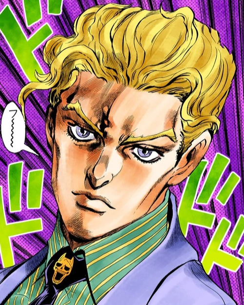

At TechTrenders, we’ve maintained our founding "small team" energy even as we’ve expanded globally. Our crew is famously tight-knit, bonded by more than just deadlines—we share a genuine obsession with shaping the future of technology. It’s a collaborative, low-ego environment where support is instinctive. Whether we’re breaking a major story or navigating a complex technical challenge, we have each other’s backs every step of the way. We believe that the clearest insights come from a team that truly connects, debates, and builds together.
Kristian "Epstein" KG
Senior Developer

Yoshikage Kira
Human resources
Nick Kerr
Sports Correspondent
Mark Fischback
Videographer
Hungry Nega dayo
Bankai Tenkai Senpai Oppai
Packgod
Phone support
Toffee
Office Good boy
At TechTrenders, we believe that the news of the future must be as sustainable as the technology it covers. For us, "sustainable news" isn't just a category—it’s a commitment to three core pillars: Reporting with Impact: We prioritize stories on green tech, the circular economy, and the energy footprint of emerging AI. Our goal is to move beyond the hype and examine how innovation can serve the planet, not just the market. A Lean Digital Footprint: As a digital-first platform, we strive for a low-carbon operation. By optimizing our site’s code for speed and energy efficiency, we ensure that staying informed doesn't come at a high environmental cost. Journalistic Longevity: Sustainability also means independence. We build long-term relationships with our readers rather than chasing fleeting clicks, ensuring TechTrenders remains a reliable voice for decades to come. Wrapped in our signature #2980b9 blue—a color of trust and stability—we are dedicated to reporting that empowers our audience to build a smarter, greener tomorrow.